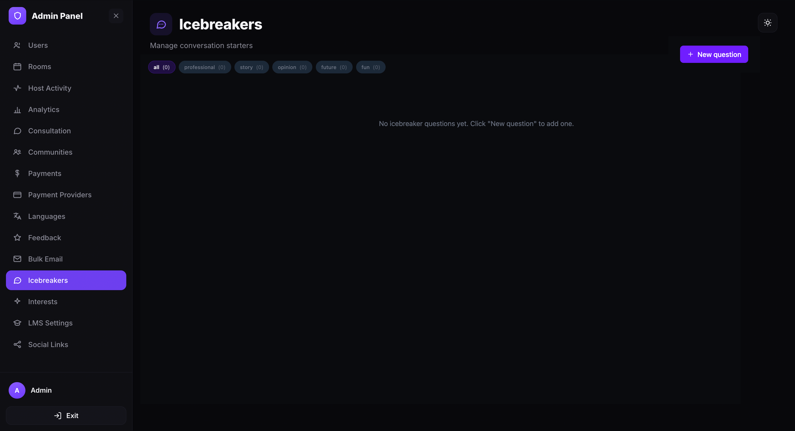
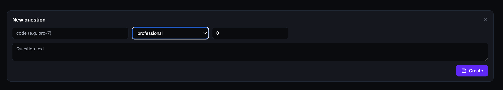
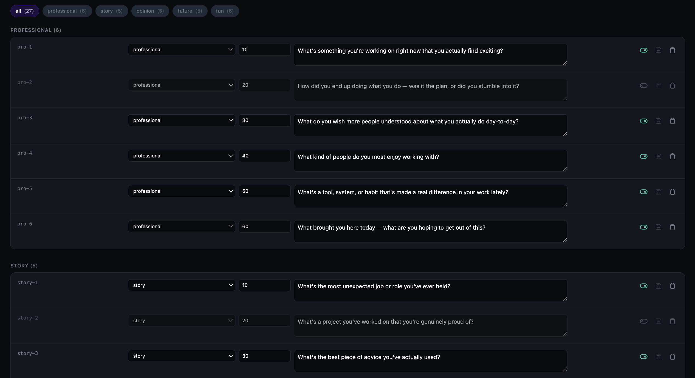

Manage icebreaker questions
Create and manage conversation starters that appear in speed networking rooms. Icebreaker questions help participants break the ice during 1-on-1 matchups. Changes go live within approximately 5 minutes.
Open the Icebreakers page
- Open the Admin Panel.
- Click Icebreakers in the left sidebar.
The Icebreakers page displays all questions organized by category. Category tabs at the top show the question count per category: all, professional, story, opinion, future, and fun. Click any tab to filter questions by that category.

Add a new question
- Click + New question in the top-right corner.
- Fill in the question details:
- Code — a short unique identifier for the question (e.g. pro-1, fun-2).
- Category — select a category from the dropdown: professional, story, opinion, future, or fun.
- Order — a number that controls display order within the category (lower numbers appear first).
- Question text — the conversation starter shown to participants.
- Click Create to save the question.

View and edit questions
Once created, questions appear grouped by category with an uppercase category header and count (e.g. PROFESSIONAL (2)). Each question row is editable inline and shows:
- The question code, category dropdown, order number, and question text — all editable directly.
- Three action icons on the right:
- Visibility toggle (eye icon) — show or hide the question in speed networking rooms. Green means visible.
- Save (disk icon) — save any inline edits to the question.
- Delete (trash icon) — permanently remove the question.
